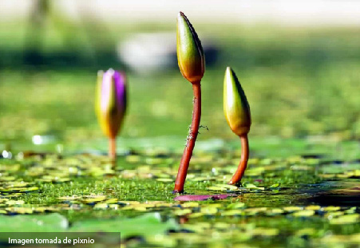

Las diversas especies de plantas que habitan en los humedales poseen adaptaciones que les permiten tolerar el exceso de humedad. Algunas especies de plantas están adaptadas a vivir completamente sumergidas mientras que otras llegan a desarrollarse tanto en el agua como en la tierra. Además, muchas de ellas tienen interacciones que las pueden beneficiar. Tal es el caso de algunas plantas acuáticas como el platanillo y la papa de agua que se ven beneficiadas al ser polinizadas por algunos insectos que a cambio de este servicio obtienen de ellas alimento como néctar y polen. Aunque también podemos encontrar interacciones en las que sólo una especie se ve beneficiada como en el caso de una especie que se alimenta de otras especies como aves, reptiles, anfibios.
Además proporcionan diversos servicios ecosistémicos como el suministro de agua dulce, plantas, frutos comestibles, materiales para la construcción (turba, madera, barro, bambú).